Configurar a integração: produtos, estoque e preços
Na aba Produtos de uma integração de loja já conectada, você define como o ERP da Olist reflete estoque e preço na loja virtual e como produtos, imagens, Código (SKU), dias de preparação e preço de custo circulam na importação e na sincronização.
Dá para escolher o saldo enviado, os depósitos considerados, o lançamento das saídas, uma margem de segurança, a origem do preço e o tratamento das imagens. O caminho é Início > Integrações. Na integração conectada, use gerenciar e abra a aba Produtos.
Pré-requisitos
- A integração de ecommerce precisa estar conectada.
- Para usar Conforme lista de preços, a conta precisa ter ao menos uma lista de preços já cadastrada. O seletor só lista as existentes e não cria lista nesta tela.
Importante
- Nenhum campo desta configuração é obrigatório.
- Se a conta tiver reserva de estoque habilitada, evite Automático ao salvar o pedido. Esse lançamento invalida a reserva.
- Depósitos de uma empresa conectada que não recebe dados desta empresa só entram no saldo depois de habilitar o envio de dados para ela.
- A gravação depende de Salvar no fim de cada sub-aba.
Instruções
Regras de estoque
-
Acesse Início > Integrações.
-
Na integração conectada, clique em gerenciar.
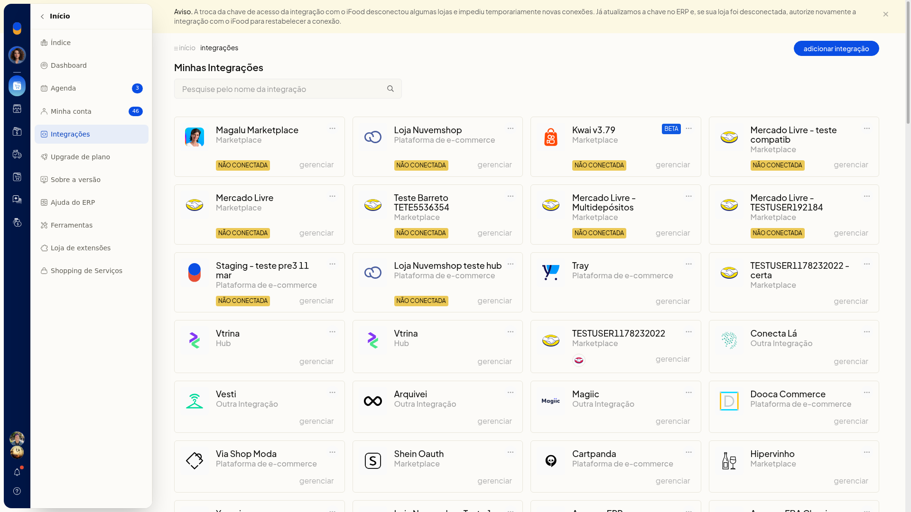
-
Abra a aba Produtos e a sub-aba Regras de Estoque.
-
Em Atualizar estoque na loja virtual a partir do ERP, escolha Não atualizar, Enviar saldo físico ou Enviar saldo disponível. O saldo disponível é o saldo físico menos as reservas. A tabela de depósitos, o lançamento das saídas e as opções de indisponibilidade e de estoque de segurança permanecem nas três opções.
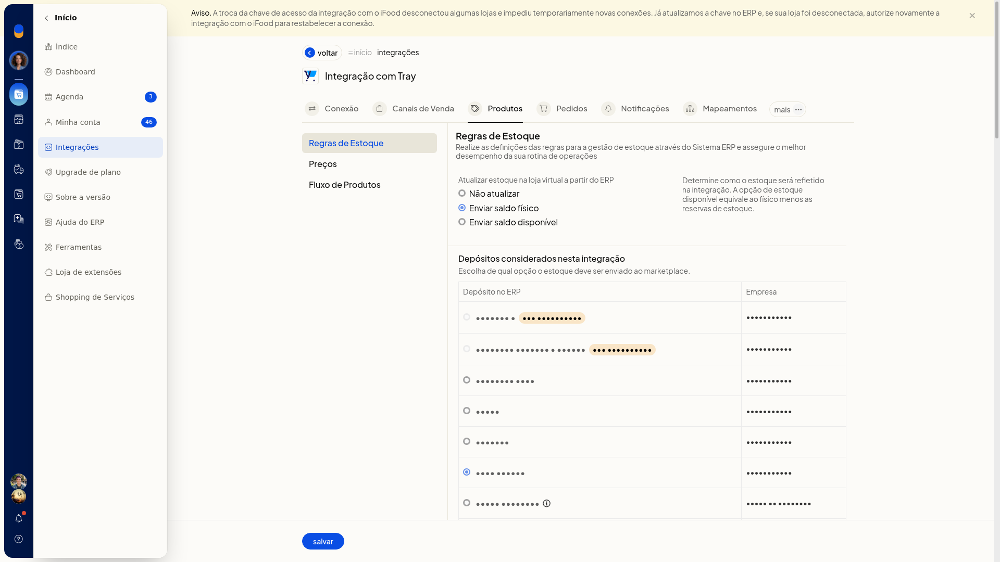
-
Em Depósitos considerados nesta integração, selecione uma linha nas colunas Depósito no ERP e Empresa, ou selecione Todos Próprios. Todos Próprios usa os depósitos de todas as empresas do grupo. Linhas não habilitadas de uma empresa conectada que não recebe dados desta empresa ficam fora do saldo até o envio ser habilitado.
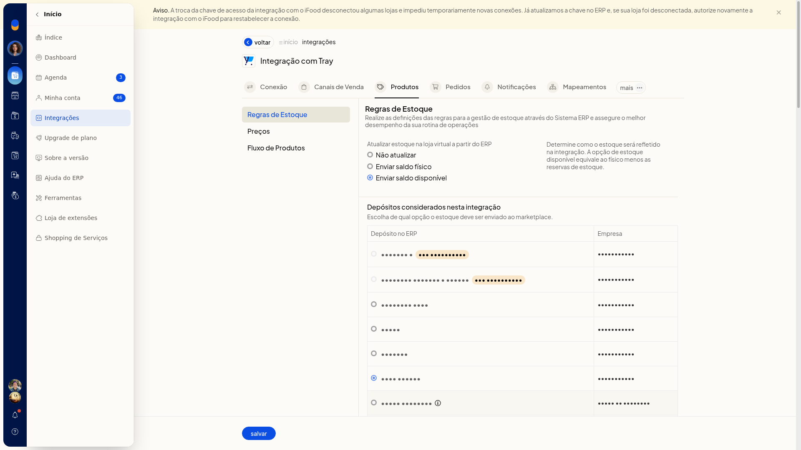
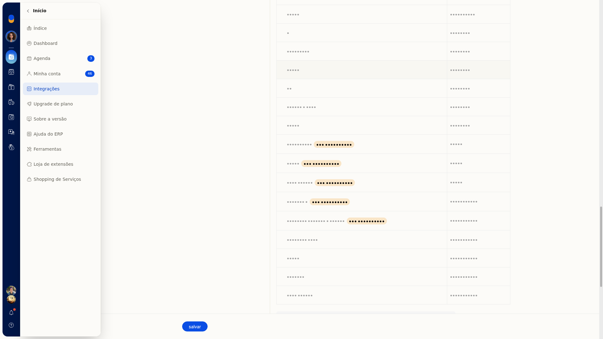
-
Em Lançamento de estoque para saídas, escolha Usar configuração padrão da conta, Manual, Automático ao autorizar a nota fiscal, Automático ao salvar a nota fiscal, Automático ao salvar o pedido ou Automático ao marcar pedido como enviado.
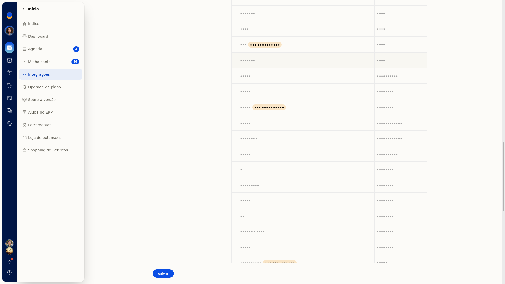
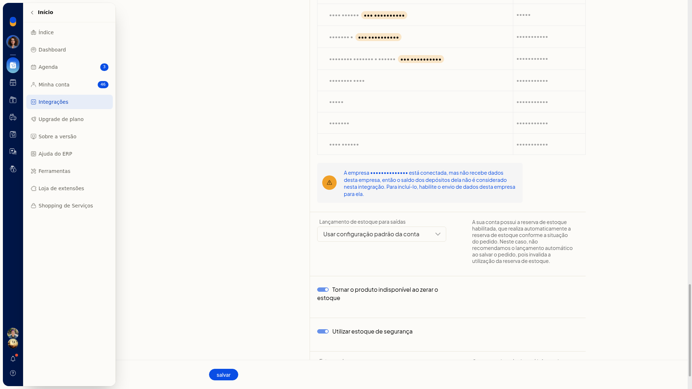
-
Marque, se quiser, Tornar o produto indisponível ao zerar o estoque.
-
Marque Utilizar estoque de segurança se quiser uma margem. Informe Estoque de segurança com vírgula decimal. Ao atingir a margem, o estoque do anúncio é informado como zero.
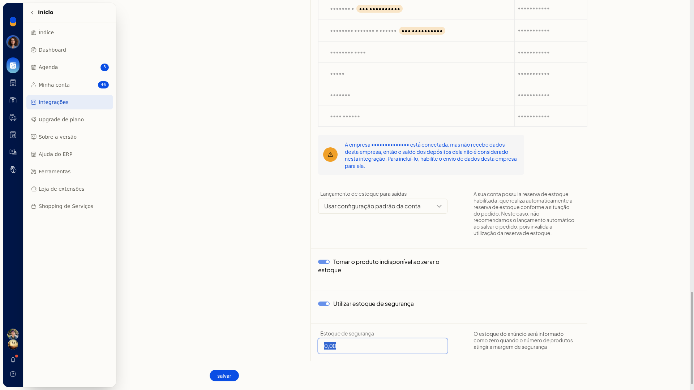
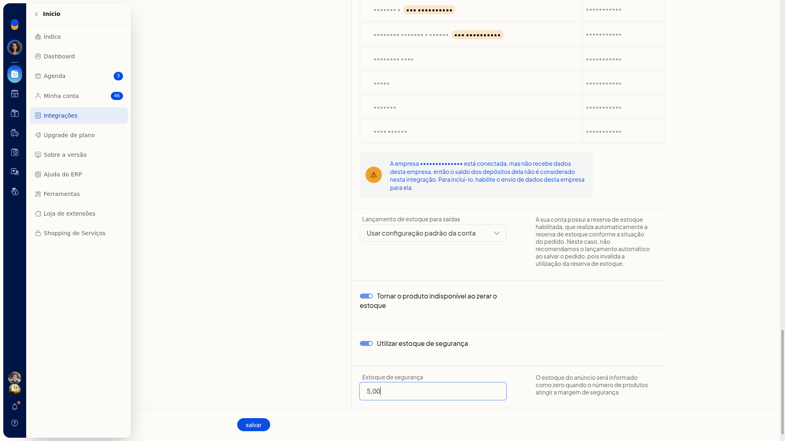
-
Clique em Salvar. A integração fica com a regra de estoque, os depósitos do saldo, o lançamento das saídas e a margem de segurança, se você a tiver informado.
Preços
-
Acesse Início > Integrações, clique em gerenciar na integração conectada e abra Produtos > Preços.
-
Em Regra de utilização de preços para o e-commerce, escolha Preço fixo, Conforme lista de preços ou Conforme regras de preço.
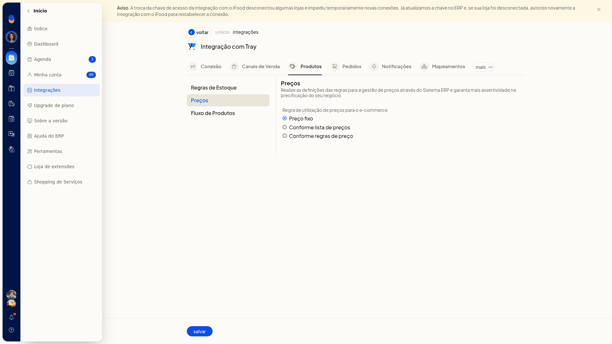
-
Em Conforme lista de preços, selecione Lista de preços utilizada nos produtos. Escolher uma lista não abre outros campos.
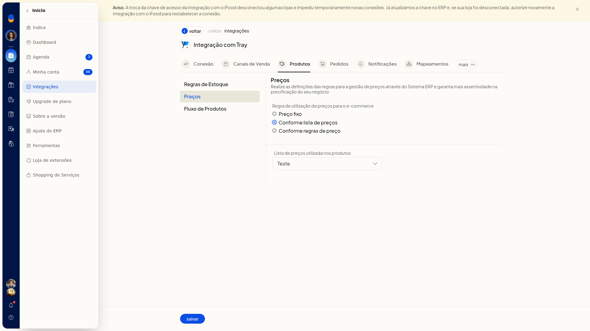
-
Em Conforme regras de preço, informe Percentual de acréscimo ou desconto com vírgula decimal e escolha Base simples ou Base por dentro em Forma para aplicar os valores adicionais. Use Saiba mais para comparar peso bruto e peso cubado.
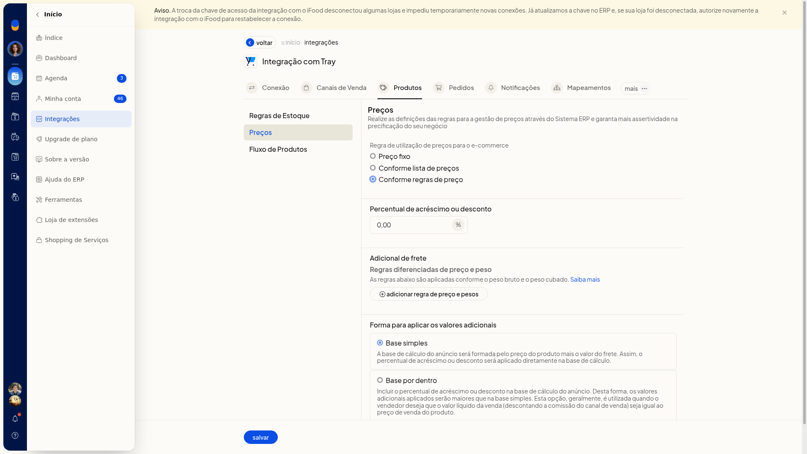
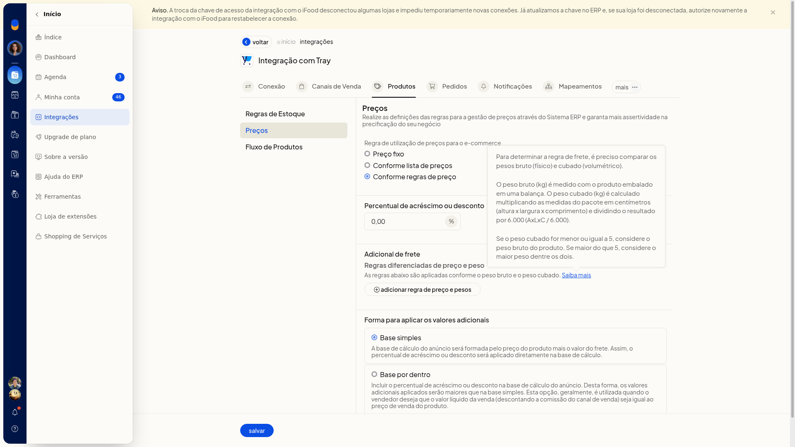
-
Clique em Adicionar regra de preço e pesos. No modal, escolha Valor fixo ou Por faixa de peso. Em Valor fixo, informe Para anúncios com preço até e Valor adicional, com vírgula decimal. Em Por faixa de peso, informe De, Até (em kg, com vírgula decimal) e Valor do frete. Você pode adicionar nova regra e marcar Definir um limite de preço máximo. Confirme no modal para gravar a regra. Fechar sem confirmar não grava.
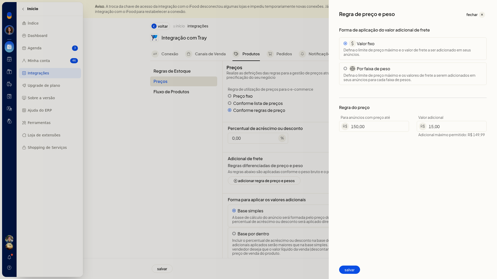
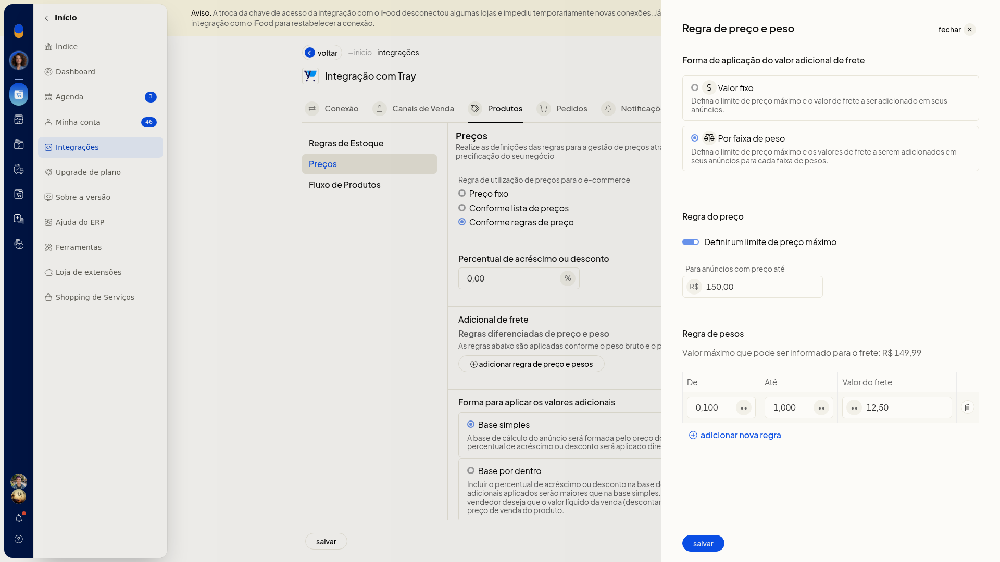
-
Clique em Salvar. A integração fica com a origem do preço da loja: preço fixo, uma lista de preços da conta ou regras com percentual, frete e forma de compor a base do anúncio.
Fluxo de produtos
-
Acesse Início > Integrações, clique em gerenciar na integração conectada e abra Produtos > Fluxo de Produtos.
-
Em Ao importar produtos, escolha Importar imagens como anexos ou Apenas importar a URL externa das imagens.
-
Em Enviar imagens dos produtos ao sincronizar, escolha Sim ou Apenas para novos produtos.
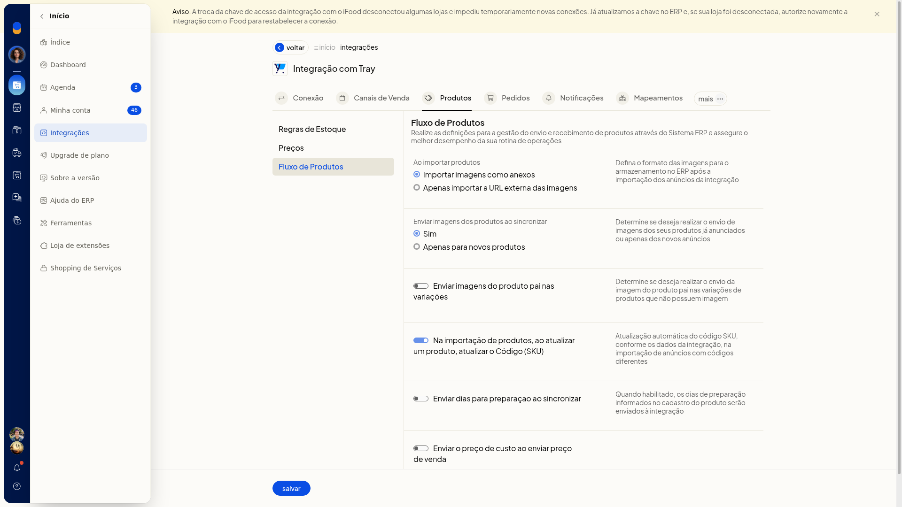
-
Marque, se quiser, Enviar imagens do produto pai nas variações, Na importação de produtos, ao atualizar um produto, atualizar o Código (SKU), Enviar dias para preparação ao sincronizar e Enviar o preço de custo ao enviar preço de venda. Essas marcações não abrem campos extras.
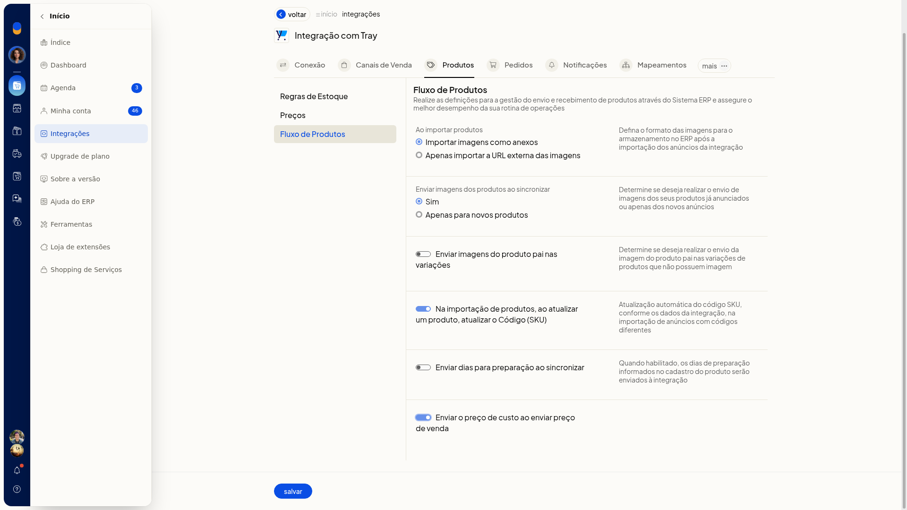
-
Clique em Salvar. A integração fica com as regras de imagens na importação e na sincronização e com as opções de Código (SKU), dias de preparação e preço de custo.
Resultado
Depois de salvar, a sub-aba Regras de Estoque mantém a forma de refletir o estoque, os depósitos e as opções de lançamento, indisponibilidade e margem. Preços mantém a regra escolhida. Fluxo de Produtos mantém as opções de imagem, Código (SKU), dias de preparação e preço de custo.
Informações adicionais
Peso usado na regra de frete
Se o peso cubado for menor ou igual a 5, use o peso bruto. Se for maior que 5, use o maior entre bruto e cubado. O peso cubado é altura x largura x comprimento em centímetros, dividido por 6.000.
Efeito da base nos valores adicionais
Base simples aplica o percentual sobre o preço do produto mais o frete. Base por dentro inclui o percentual na base, e os adicionais ficam maiores.
Caminho que não configura produtos, estoque ou preços
mais > Outros abre Configurações Adicionais de situação de pedido e tipo de etiqueta. Esse caminho não configura produtos, estoque ou preços.